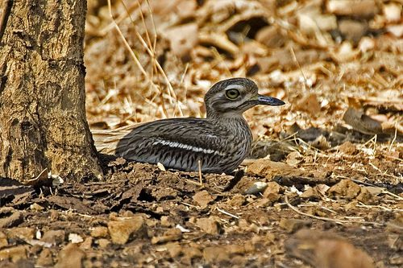

करवानकIndian Thick-knee
Burhinus indicus · Burhinidae · BRD-0193

- Scientific name वैज्ञानिक नाम
- Burhinus indicus (Salvadori, 1865)
- Family कुल
- Burhinidae
- Hindi हिंदी
- करवानक
- Local names स्थानीय नाम
- karwanak, karvanak, indian thick knee, stone curlew
- Status here यहाँ की स्थिति
- native
- Movement आवागमन
- Resident, here all year
- Known from कहाँ दर्ज
- Others have published records from the Basti–Ayodhya districts बस्ती–अयोध्या के ज़िलों से दूसरों के प्रकाशित अभिलेख
- IUCN IUCN
- LC
- Review समीक्षा
- audited and independently read
When to look कब देखें
Present all year. साल भर मौजूद।
Uses and possibilities उपयोग और संभावनाएँ
Drawn from the documented uses in the profile below, where each is labelled traditional, current or a research lead. All uses →
Tell it apart from इनसे अलग पहचानें
करवानक / Indian Thick-knee
Burhinus indicus (Salvadori, 1865) — Burhinidae
करवानक — रात की चिड़िया, जो खुले मैदानों और बंजर जमीन पर रहती है। दिन में छिपी रहती है, पर रात को तेजी से दौड़ती है। इसकी आँखें बहुत बड़ी हैं, रात में देखने के लिए अनुकूलित। जमीन पर ही घोंसला बनाती है।
Quick Identification त्वरित पहचान
| Feature | Description |
|---|---|
| Size | Medium-sized bird; 40–43 cm tall |
| Plumage | Cryptic grey-brown overall; streaked and mottled |
| Eyes | Very large, yellow, forward-directed (nocturnal adaptation) |
| Legs | Long, sturdy; yellow or greenish-yellow |
| Knees | Swollen, prominent (giving name) |
| Bill | Long, pointed, yellow with dark tip |
| Posture | Upright, alert, horizontal stance |
Field tip: A nocturnal or crepuscular wader of open country. Large yellow eyes are distinctive. Cryptic coloration and ground-dwelling habits make it easy to overlook. Freezes when approached or flies a short distance if very closely disturbed. Most active at dusk and night.
हिंदी — कैसे पहचानें:
रात की चिड़िया, खुले मैदानों में। बहुत बड़ी पीली आँखें। लंबी पीली टाँगें, मोटी घुटने (thick knees)। भूरा-हरा रंग, गलीचे जैसा। दिन में जमीन में छिपी रहती है।
Morphology आकारिकी
Biometrics:
| Measurement | Range |
|---|---|
| Total height | 400–430 mm |
| Wing (flattened chord) | 220–250 mm |
| Tail | 120–150 mm |
| Tarsus | 55–68 mm (notably swollen at "knee") |
| Bill (culmen) | 35–42 mm |
| Weight | 350–450 g |
Size: 40–43 cm tall; medium-sized wader.
Plumage: Cryptic grey-brown overall. Head and neck buff-brown with darker streaking. Back brown with darker mottling and barring (camouflaged for ground-nesting). Wings darker with white wing-bars visible in flight. Underparts buff-white with slight barring on flanks. Throat white.
Eyes: Very large (unusual for birds), yellow with dark pupil; forward-directed; adapted for nocturnal vision and forward vision while on ground.
Legs: Long, sturdy; yellow or greenish-yellow. Tarsus notably thickened ("thick-knee") from which name derives; swelling accommodates muscle for running.
Bill: Long, pointed; yellow with dark tip. Slightly hooked.
Sexes: Similar; no major dimorphism.
Vocalisations. Call repertoire:
- Territorial call: Loud, eerie curr-curr-curr-curreee or kurreee-kurreee, given at dusk and night.
- Contact call: Softer pip or whit notes.
- Alarm call: Sharp kik or tik notes if flushed.
हिंदी: बहुत बड़ी, पीली, आगे की ओर देखने वाली आँखें। लंबी, पीली टाँगें, घुटने मोटे और सूजे हुए। भूरा-हरा रंग। रात को जोर से चिल्लाता है।
Behaviour & Ecology व्यवहार और पारिस्थितिकता
Foraging ecology: Nocturnal and crepuscular; most active at dusk, throughout night, and at dawn. Forages on ground by walking and probing or picking from soil surface. Feeds on:
- Insects (grasshoppers, beetles, crickets, termites)
- Worms
- Small reptiles (occasionally)
- Seeds and plant matter
Habitat use: Prefers open, bare, or sparsely vegetated ground: grasslands, wastelands, riverine sandbars, gravel beds, and fallow fields. Avoids densely vegetated areas.
Social behaviour: Solitary or in pairs. Territorial year-round; males defend territories vocally at night.
Cryptic behaviour: During day, remains motionless on ground, relying on camouflage. If approached, either freezes or runs away quickly; if very closely approached, may fly a short distance with erratic, slow flight.
Breeding: Nest is simple scrape on bare ground; both sexes incubate and care for young.
Activity: Primarily nocturnal; calls loudly at dusk and night. Day largely inactive.
हिंदी: रात को सक्रिय रहता है, दिन में सोता है। जमीन पर कीटों को खोजता है। अकेला या जोड़े में। बहुत शर्मीला; दिन में छिप कर रहता है। रात को जोर-जोर से चिल्लाता है।
Life Cycle / Phenology जीवन चक्र
Breeding: Breeds February–May; single brood per year.
Nesting: Nest a simple scrape on bare ground, often near rocks or clods of earth. Clutch 2 eggs (rarely 3); incubation 21–24 days; fledging 36–40 days. Both sexes incubate and feed chicks.
Territorial behaviour: Males vocalize extensively during breeding to defend territories; calling at dusk and throughout night.
Moult: Gradual moult in post-breeding season (June–September); complete renewal.
Activity: Resident year-round; nocturnal throughout year.
| Month | Event |
|---|---|
| January–February | Territorial calling increases; pairing |
| February–May | Breeding; nesting and chick-rearing |
| June–September | Moult; reduced vocal activity |
| October–December | Feeding and territorial maintenance |
हिंदी: साल भर यहीं रहता है। फरवरी-मई में घोंसले बनाता है। जमीन में दो अंडे देता है। रात को गीत गाकर इलाका बताता है।
Host Plants or Prey आहार
| Food Type | Examples | Feeding Behaviour |
|---|---|---|
| Insects | Grasshoppers, beetles, crickets, termites | Pick from ground; probe soil |
| Worms | Earthworms and other soil fauna | Probe in soil |
| Small reptiles | Occasional small snakes/lizards | Pick from ground |
| Seeds | Grass and weed seeds | Glean from ground |
हिंदी: टिड्डे, भृंग, दीमक खाता है। मिट्टी में खुदाई करके कीड़े निकालता है। कभी-कभी छोटे साँप भी खा जाता है। बीज भी खोजता है।
Predators / Natural Enemies शत्रु
- Avian predators: Owls (nocturnal vulnerability), eagles (if seen during day)
- Mammalian predators: Jackal, hyena (occasionally), wild cat
- Nest predators: Snakes, monitors, mongooses, hyenas
हिंदी: रात के शिकारी उल्लू इसके शिकारी हैं। दिन में गीदड़ और जंगली जानवर खतरा बन सकते हैं। घोंसले को साँपों से खतरा।
Agricultural / Human Relevance कृषि प्रासंगिकता
Protected status: Indian Thick-knee is protected under the Wildlife (Protection) Act 1972, Schedule I. All wild birds listed are protected; hunting and trapping are prohibited.
Pest control: Beneficial in agricultural areas because it feeds on grasshoppers, crickets, and other insect pests.
Agricultural conflict: May damage crops in resting areas if grain is stored on ground; generally minor issue due to nocturnal habits.
Nocturnal indicator: Presence in agricultural areas indicates ecological health and minimal pesticide use (strong indicator because nocturnal and ground-nesting).
Cultural significance: Nocturnal calling is distinctive and well-known in rural areas; sometimes called by other local names; culturally significant as indicator of night fauna.
हिंदी: यह पक्षी विधि अधिनियम 1972 की पूरी तरह सुरक्षित है। खेतों के कीटों को खा कर मदद करता है। इसकी रात की चिल्लाहट गाँव में सुनाई पड़ती है।
Expected Locally स्थानीय रूप से अपेक्षित
Not a field record. Written from published accounts for eastern Uttar Pradesh. No confirmed local sighting yet — if you have seen it, that is what the atlas needs.
अभी तक स्थानीय पुष्टि नहीं। यह विवरण प्रकाशित स्रोतों से है, किसी अवलोकन से नहीं।
This species is NOT a field record. Distribution based on published sources. Indian Thick-knee is expected in open grasslands and waste ground throughout eastern Uttar Pradesh.
GBIF holds published records from these districts. The species is present year-round in suitable habitats.
Habitat requirements: Open, bare, or sparsely vegetated ground. Suitable habitat abundant in agricultural region.
Year-round presence: Resident; no seasonal migration. Most active nocturnally.
Nearest published records: Documented throughout eastern Uttar Pradesh (Ali & Ripley 1968); nocturnal habits mean it is undercounted in surveys.
First record needed: A dated photograph showing the bird clearly (large eyes and thick legs distinctive) in a specific location (with GPS coordinates), or an audio recording of the distinctive territorial call (evening/night) submitted through the About page.
हिंदी: यह स्थानीय रूप से अपेक्षित है, न कि देखे गए बतौर प्रेक्षण। खुले मैदानों में साल भर रहता है। दिन में जमीन में छिपा दिखता है, पर रात को गश्त करता है। इसकी आवाज़ से पता चलता है। पहला रिकॉर्ड के लिए फोटो या रात की चिल्लाहट की रिकॉर्डिंग चाहिए।
Distribution वितरण
Global range: Indian subcontinent; resident and non-migratory.
In India: Distributed across subcontinent in suitable open country habitats; more common in open plains.
In Uttar Pradesh: Found in grasslands, wastelands, and river-beds throughout the state.
In Basti district / eastern UP: Resident in grasslands, agricultural wastelands, and riverine habitats. More common than diurnal surveys suggest due to nocturnal habits.
Research Questions शोध प्रश्न
- What is the true distribution and population density of Indian Thick-knee in eastern UP when accounting for nocturnal habits?
- How does habitat modification (drainage, cultivation, building) affect breeding success and territory quality?
- What is the diet composition through different seasons, and what percentage of diet comprises agricultural pest species?
- क्या इस पक्षी की रात की आवाज़ों की आवृत्ति और पैटर्न मौसम या प्रजनन स्थिति को दर्शाते हैं?
- What is the nest survival rate and what are the primary predators and causes of nest failure? (A child can locate nests and monitor breeding success through night surveys.)
- क्या खेतों में कीटनाशकों का उपयोग इस पक्षी की संख्या को प्रभावित करता है?
Similar Species मिलती-जुलती प्रजातियाँ
| Species | Key Difference | Hindi | Field Rule | |
|---|---|---|---|---|
| [[great_thick_knee\ | Great Thick-knee]] (Esacus recurvirostris) | Larger (50 cm); long upturned bill; different habitat (river-beds) | बड़ा करवानक | Great is much larger with distinctive upturned bill. Indian is smaller. |
| Stone-curlew (Burhinus oedicnemus) | European and Asian; stoops more; different plumage details | — | Not in Indian subcontinent; Old World species. |
Field rule: Indian Thick-knee is identified by very large yellow eyes, long yellow legs with notably swollen "knees", and cryptic grey-brown camouflaged plumage. Nocturnal habits and ground-dwelling are defining. Large eyes are most distinctive feature.
Taxonomy & Classification वर्गीकरण
Original description. Described by Salvadori in 1865 from India. Type locality peninsular India.
Subspecies. Monotypic; B. i. indicus throughout range.
Family and order placement. Order Charadriiformes; family Burhinidae (stone-curlews). Genus Burhinus comprises 9 species across Africa and Asia.
Phylogenetic notes. Part of larger Burhinidae radiation; closest relatives are other Asian thick-knees (Esacus, Orthorhamphus).
IUCN status rationale. Assessed as Least Concern (LC). Widely distributed and adaptable to human-modified landscapes. Population stable. Not significantly threatened by hunting or habitat loss.
हिंदी: यह करवानक परिवार की एक प्रजाति है। भारत में सबसे आम है। दिन में देखना मुश्किल है, पर रात को आवाज़ से पता चलता है। विश्व भर में सुरक्षित प्रजाति है।
Photo Gallery फोटो गैलरी
No photos yet — add field photos to media/species/indian_thick_knee/ and run node scripts/sync_photos.js.
Wanted photos:
- Perched or on ground (showing large eyes and thick legs)
- Running on bare ground
- Pair interaction or courtship
- Nesting or nest area
- In flight (if possible)
References संदर्भ
- Salvadori, T. (1865). Catalogo dei tipi di uccelli conservati nel museo di Genova. Annali del Museo Civico di Storia Naturale 1: 1–80.
- Ali, S. & Ripley, S. D. (1968). Handbook of the Birds of India and Pakistan. Vol. 1 (Divers to Hawks). Oxford University Press, Delhi. Pp. 242–244.
- Rasmussen, P. C. & Anderton, J. C. (2005). Birds of South Asia: The Ripley Guide. Smithsonian Institution and Lynx Edicions, Barcelona. Vol. 2, p. 192.
- Cramp, S. (Ed.). (1983). Handbook of the Birds of Europe, the Middle East and North Africa: The Birds of the Western Palearctic. Vol. 3 (Waders to Gulls). Oxford University Press. Pp. 20–23.
- GBIF Occurrence Data — Burhinus indicus, India. Global Biodiversity Information Facility.
- IUCN Red List (2023). Burhinus indicus — assessment. IUCN, Cambridge. Status: Least Concern.
Source file: species/fauna/birds/indian_thick_knee.md